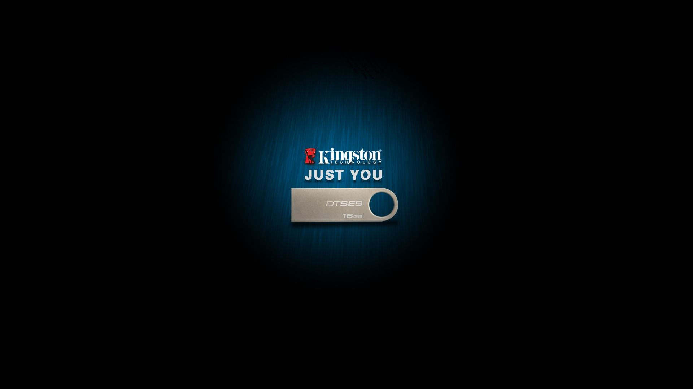

{%extends 'base.html'%}

{% block title %}假冒伪劣火影忍者中文网{% endblock %}
{%block Js%}

    {{block.super}}


    <link href="../static/css/swiper.css" rel='stylesheet' type='text/css' />

    <script src="https://cdnjs.cloudflare.com/ajax/libs/Swiper/4.0.2/js/swiper.js"></script>

    <script src="https://cdnjs.cloudflare.com/ajax/libs/Swiper/4.0.2/js/swiper.min.js"></script>

{%endblock%}


{%block header%}

    <nav class="navbar navbar-default">
  <div class="container-fluid">
    <!-- Brand and toggle get grouped for better mobile display -->
    <div class="navbar-header">
      <button type="button" class="navbar-toggle collapsed" data-toggle="collapse" data-target="#bs-example-navbar-collapse-1" aria-expanded="false">
        <span class="sr-only">Toggle navigation</span>
        <span class="icon-bar"></span>
        <span class="icon-bar"></span>
        <span class="icon-bar"></span>
      </button>
      <a class="navbar-brand" href="{% url 'my_index' %}">首页</a>
    </div>

    <!-- Collect the nav links, forms, and other content for toggling -->
    <div class="collapse navbar-collapse" id="bs-example-navbar-collapse-1">
      <ul class="nav navbar-nav">
        <li class="active"><a href="#">热门 <span class="sr-only">(current)</span></a></li>
        <li><a href="#">排行</a></li>
        <li class="dropdown">
          <a href="#" class="dropdown-toggle" data-toggle="dropdown" role="button" aria-haspopup="true" aria-expanded="false">分类 <span class="caret"></span></a>
          <ul class="dropdown-menu">
{#            <li><a href="{% url 'get_movies' %}">正常顺序的放送</a></li>#}
{#            <li><a href="#">战役集锦的放送</a></li>#}
{#            <li><a href="#">催泪特辑的放送</a></li>#}
{#            <li><a href="#">剧场的放送</a></li>#}
{#            <li role="separator" class="divider"></li>#}
              {% for i in category %}
                  <li><a href="">{{ i.name }}</a></li>
              {% endfor %}
              <li role="separator" class="divider"></li>
              <li><a href="#">更多分类</a></li>
          </ul>
        </li>
      </ul>
      <form class="navbar-form navbar-left">
        <div class="form-group">
          <input type="text" class="form-control" placeholder="鼬神的秘密">
        </div>
        <button type="submit" class="btn btn-primary">搜索</button>
      </form>
      <ul class="nav navbar-nav navbar-right">
        <li>
            
        </li>
        <li><a href="#">欢迎{{ u_name }}</a> </li>

        <li><a href="{% url 'my_login_v1' %}">登录</a></li>
        <li><a href="{% url 'new_logout' %}">退出</a></li>
        <li class="dropdown">
          <a href="#" class="dropdown-toggle" data-toggle="dropdown" role="button" aria-haspopup="true" aria-expanded="false">联系我们 <span class="caret"></span></a>
          <ul class="dropdown-menu">
            <li><a href="#">QQ</a></li>
            <li><a href="#">微信</a></li>
            <li><a href="#">email</a></li>
            <li role="separator" class="divider"></li>
            <li><a href="{% url 'my_person' %}">个人中心</a></li>
          </ul>
        </li>
      </ul>
    </div><!-- /.navbar-collapse -->
  </div><!-- /.container-fluid -->
</nav>

{%endblock%}

{%block banner%}

{%endblock%}

{% block footer %}
    <p style="text-align: center">盗版必究————盗版必究————盗版必究</p>
{% endblock %}


{%block jscode%}

<script>
  var mySwiper = new Swiper ('.swiper-container', {
    direction: 'vertical',
    loop: true,

    // 如果需要分页器
    pagination: {
      el: '.swiper-pagination',
    },

    // 如果需要前进后退按钮
    navigation: {
      nextEl: '.swiper-button-next',
      prevEl: '.swiper-button-prev'
    },

    // 如果需要滚动条
    scrollbar: {
      el: '.swiper-scrollbar'
    },


  })

</script>
{%endblock%}
